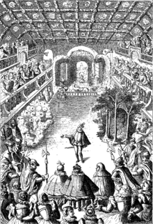

Ser bailarina é ser destemida, é ter adrenalina, é sentir que não deve desistir.


 Balé (do francês Ballet) é um estilo de dança que se originou nas cortes da Itália renascentista durante o século XV, e que se desenvolveu ainda mais na Inglaterra, Rússia e França como uma forma de dança de concerto. As primeiras apresentações diante da plateia eram feitas com o público sentado em camadas ou galerias, disposto em três lados da pista de dança.São realizadas com o acompanhamento de música clássica.
É um tipo de dança influente a nível mundial que possui uma forma altamente técnica e um vocabulário próprio. Este gênero de dança é muito difícil de dominar e requer muita prática. Ele é ensinado em escolas próprias em todo o mundo, que usam suas próprias culturas e sociedades para informar esse tipo de arte. As diferentes técnicas de balé, entre elas mímica e atuação, são coreografadas e realizadas por artistas formados e também acompanhadas por arranjos musicais (geralmente de orquestra mas, ocasionalmente, vocal). É um estilo equilibrado de dança que incorpora as técnicas fundamentais para muitas outras formas de dança. A sua forma mais conhecida é o balé romântico ou "Ballet Blanc", que valoriza a bailarina em detrimento de qualquer outro elemento, focando no trabalho de pontas, fluidez e movimentos acrobáticos precisos. Esta forma utiliza como figurino o convencional tutu francês de cor branca.
A proposta do site é primeiiramente apresentar uma pequena parte da grande diversidade do estilo de dança BALÈ e assim transmitir um pouco de conhecimento.